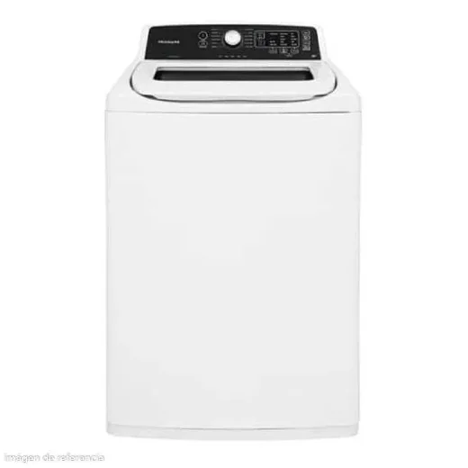
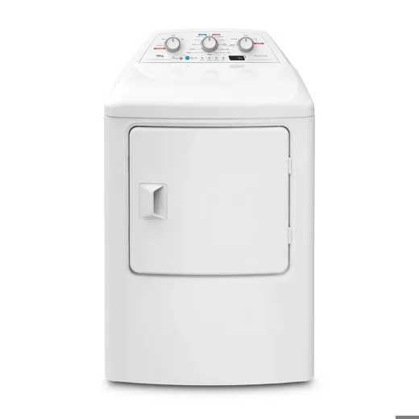
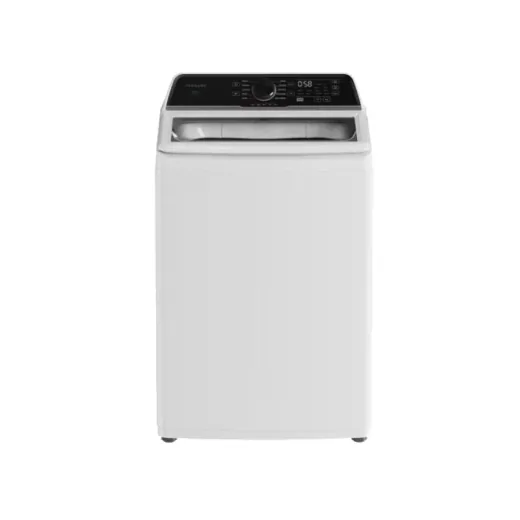
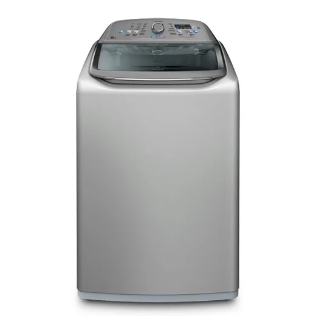
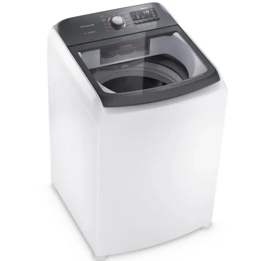

Inicio › Lavadoras y secadoras

Frigidaire · Modelo FLVE7523BW
Secadora Frigidaire · 25 kg · FLVE7523BW
L 13,999
Más barato en Lady Lee
Precio en cada tienda
| Tienda | Precio | Antes | Disponibilidad | |
|---|---|---|---|---|
| Lady Lee | L 13,999 | Disponible | Ver en tienda › | |
| Elektra | L 14,799 | Agotado | Ver en tienda › |
Precios referenciales tomados de cada tienda el 21 de noviembre de 2026. El precio válido es el que muestra la tienda al comprar.
Historial de precio
Lo seguimos desde el 1 de noviembre. Precio más bajo registrado: L 13,999 en Lady Lee (21 de noviembre), igual que hoy. Cambios de precio registrados: 2.
Características
| Bono | 1000 |
|---|---|
| Capacidad del tambor | 7 pies cúbicos (aprox. 55 libras / 25 kg) |
| Material del tambor | Acero Inoxidable |
| Tipo de respaldo del tambor | Acero aleado aluminizado |
| Niveles de sequedad | 5 (Máximo, Normal, Más Seco, Menos Seco, Aire Frío) |
| Temperaturas de secado | 5 (Aire Frío, Baja, Media, Alta, Máxima) |
| Alto | 43.1 pulgadas (109.5 cm) |
| Ancho | 27 pulgadas (68.6 cm) |
| Profundidad | 30.1 pulgadas (76.5 cm) |
Descripción
Secado eficiente para el cuidado diario de tu ropa
La Secadora Eléctrica Frigidaire FLVE7523BW de 7.0 pies cúbicos ofrece gran capacidad, múltiples ciclos de secado y tecnología inteligente para mantener tus prendas listas cuando las necesites.
La Frigidaire FLVE7523BW está diseñada para facilitar las tareas de lavandería gracias a su amplia capacidad y sus programas especializados para distintos tipos de prendas. Su tambor espacioso permite secar grandes cargas de ropa, incluyendo toallas, ropa de cama y prendas voluminosas.
Equipada con 10 ciclos de secado, sensores de humedad y controles electrónicos con pantalla digital, ayuda a optimizar el rendimiento del secado mientras cuida mejor cada tejido. Además, incorpora opciones como Quick Dry, Anti-Wrinkle y Eco Dry para una experiencia más práctica y eficiente.
Características destacadas
• Capacidad de 7.0 pies cúbicos.
• 10 ciclos
Otros lavadoras y secadoras Frigidaire
 Lavadora Frigidaire · 21 kg · PlataL 13,999En Lady Lee
Lavadora Frigidaire · 21 kg · PlataL 13,999En Lady Lee
Lavadora Frigidaire · 22 kgL 13,999En Lady Lee
Secadora Frigidaire · 19 kg · FDE190MSSWL 13,990En Diunsa
Lavadora Frigidaire · 25 kg · FLVW7523BWL 14,799En Elektra
Lavadora Frigidaire · 20 kg · FWID20E4MBSL 12,690En Diunsa Lavadora Frigidaire · 18 kgL 11,999En Lady Lee
Lavadora Frigidaire · 18 kgL 11,999En Lady Lee
Lavadora Frigidaire · 18 kg · FWIB18T4EBPUGL 11,495En Gallo más Gallo Lavadora Frigidaire · 22 kg · FWIB22J4EBGUWL 11,490En 4 tiendas · más barato en Diunsa
Lavadora Frigidaire · 22 kg · FWIB22J4EBGUWL 11,490En 4 tiendas · más barato en Diunsa